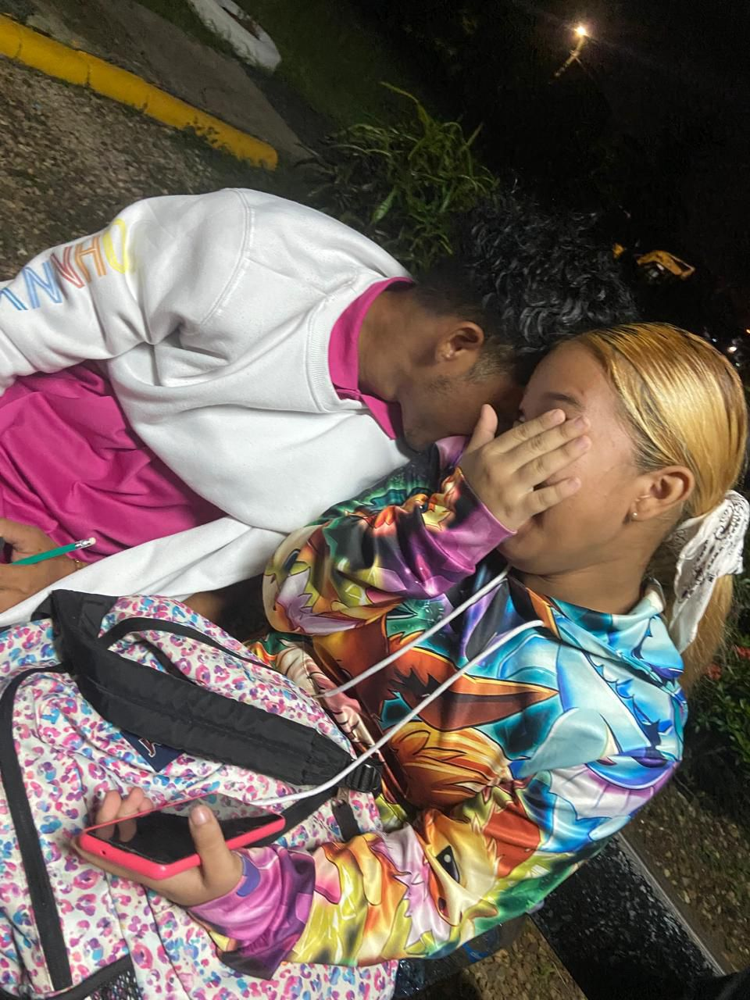
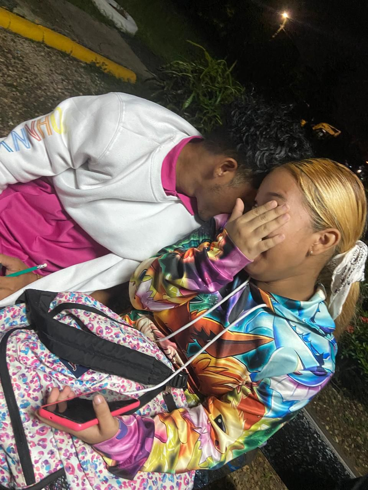

Nuestro rinconcito de 💙amor💖


 


Mi primer cumpleaños juntos😍

Participando en su evento🙈
Nuestro paseo nocturno🌙

¿Te acuerdas de la frase que siempre te decÁa? ¿Esa frase que te decÁa que jamás dejaré de cumplir?💙💖
✨Te amo y te amaré siempre, en esta y mil vidas✨

Hecho con amor por Abdiel para Massiel 💙💖
Este pequeño regalo lo hice con el sentir de que te mereces que te den todo por la gran y maravillosa persona que eres.
Eres una mujer muy encantadora, alguien que de verdad no tiene lÁmite en todas las cosas grandiosas que es.
Desde que llegaste a mi vida no e dejado de vivir cosas hermosas, fabulósas, divertÁdas, incluso hasta románticas contigo.
Quiero agradecerte por todo lo que has echo y has logrado cambiar dentro de mi y las cosas super hermosas que me hiciste vivir.
No tengo palabras ni mucho menos que hacer para devolvérte todo lo que me has dado estando conmigo.
Por eso con este regalo quiero darte al menos ese poquito de todas las cosas que quiero darte en esta vida y las mil próximas.
Te amo demasiado Massiel Daylin Vergara Reina y nunca dejaré de hacerlo, ni en esta, ni en mil vidas, porque para mi, eres El amor más grande que me pueden haber dado.